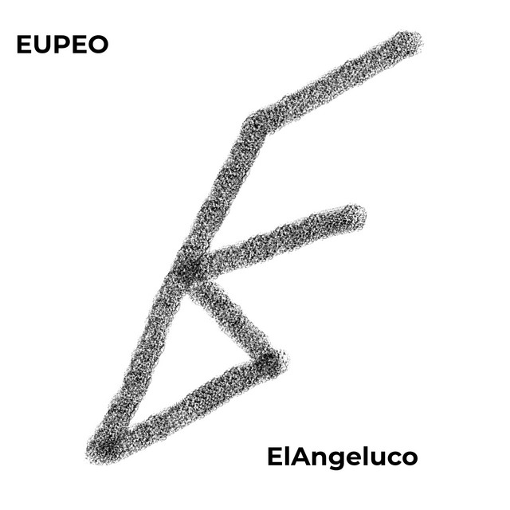
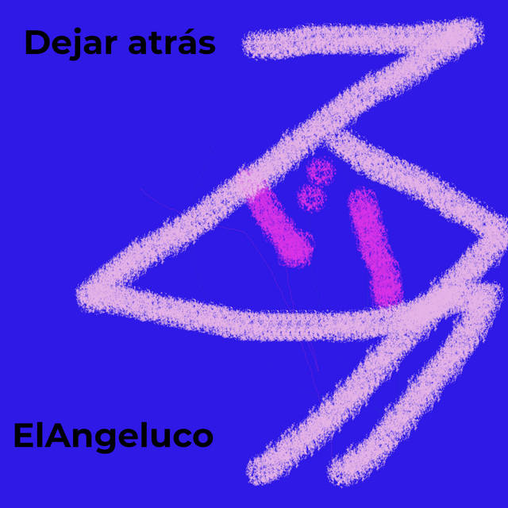
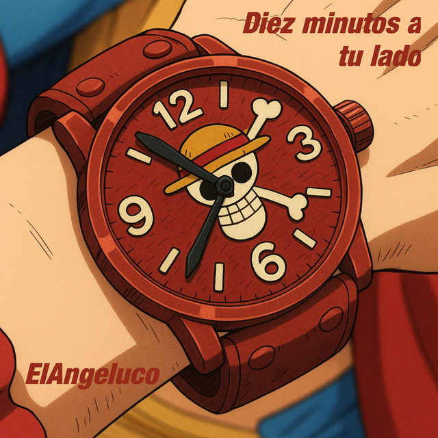
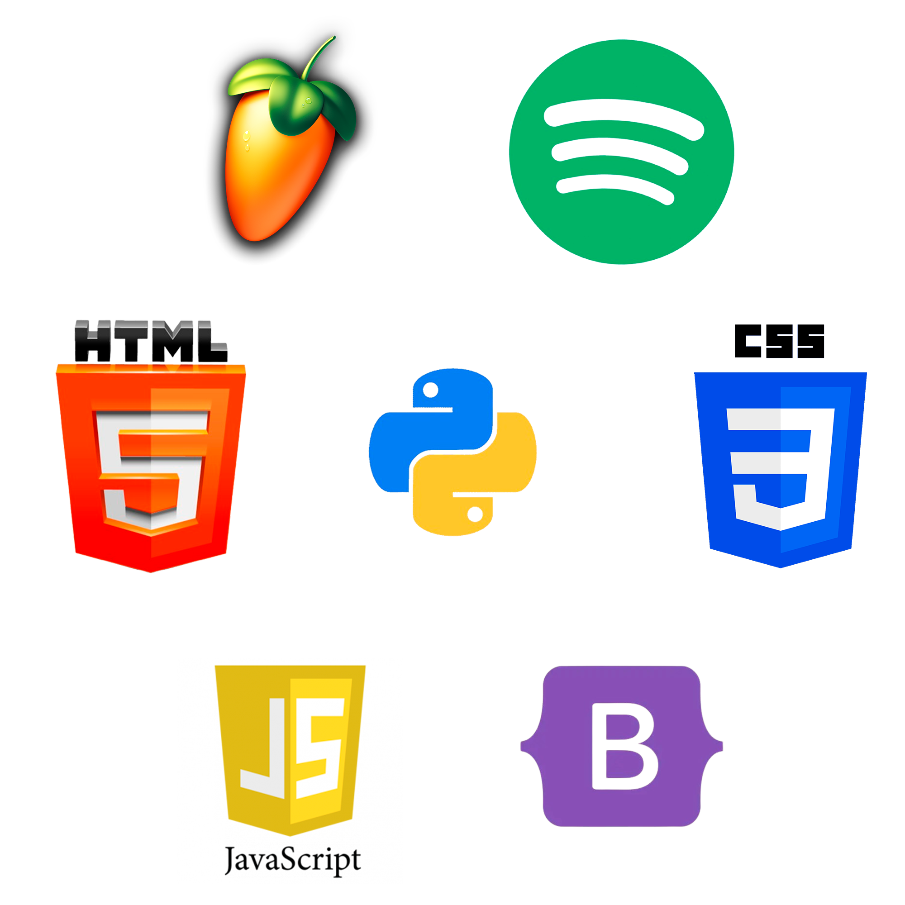

Mis proyectos recientes
Estos son varios de mis proyectos realizados durante mi tiempo de prácticas. También teneis enlaces a varios de mis éxitos musicales.




Desarrollo sitios web y programo aplicaciones. Además, en mis ratos libres me dedico a la produción musical y tengo varias canciones publicadas.
Tengo experiencia en programación con python y desarrollo de páginas web con html5, css, javascript y bootstrap 5; así como conocimientos en producción musical con Fl Studio

Cuento con múltiples conocimientos en el desarrollo de páginas web, habiendo trabajado con HTML, CSS, Javascript y Bootstrap; así como con frameworks como Flask y Django.
Tengo experiencia programando en lenguaje Python, habiendo hecho uso de librerías como Matplotlib, Numpy, Pandas y Streamlit.
En cuanto a mis habilidades musicales tengo experiencia tocando el piano (con un Grado 7 por Trinity y a la espera de sacarme el grado 8) y produciendo con FL Studio (autodidacta). Gracias a estos conocimientos he podido escribir y grabar varias canciones que están disponibles en múltiples plataformas.
Estos son varios de mis proyectos realizados durante mi tiempo de prácticas. También teneis enlaces a varios de mis éxitos musicales.



Aquí se muestran varios artículos de interés general relacionados con la informática, la música o el fútbol (otro de mis intereses). Ninguno ha sido hecho por mí (en el footer se etiquetarán a los autores)